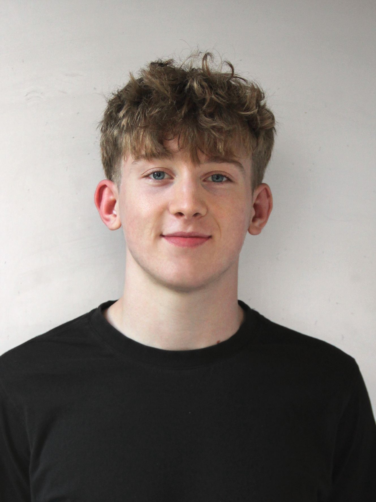

Aktuell in der Ausbildung als Plattformenentwickler bei Sunrise GmbH.
Ich habe Erfahrung mit Cisco, Huawei und Juniper Infrastruktur,
automatisiere mit Ansible und arbeite mit Linux RedHat.
Neben der Arbeit trainiere ich MMA, Kraft und laufe Langstrecke.
Ich interessiere mich fur Netzwerktechnik auf allen Layern:
vom physischen Kabel bis zum Routing.
Zürich, CH - UTC+2
2007 geboren
matteolehnert@gmail.com

Netzwerktechnik
Systeme & Code
Basislehrjahr im BBC. Routing-Grundlagen in IP-Transport. Linux im Unix Department. Cisco, Huawei und Juniper Infrastruktur im Alltag.
Grundlagen der Informatik, Netzwerktechnik und Softwareentwicklung.